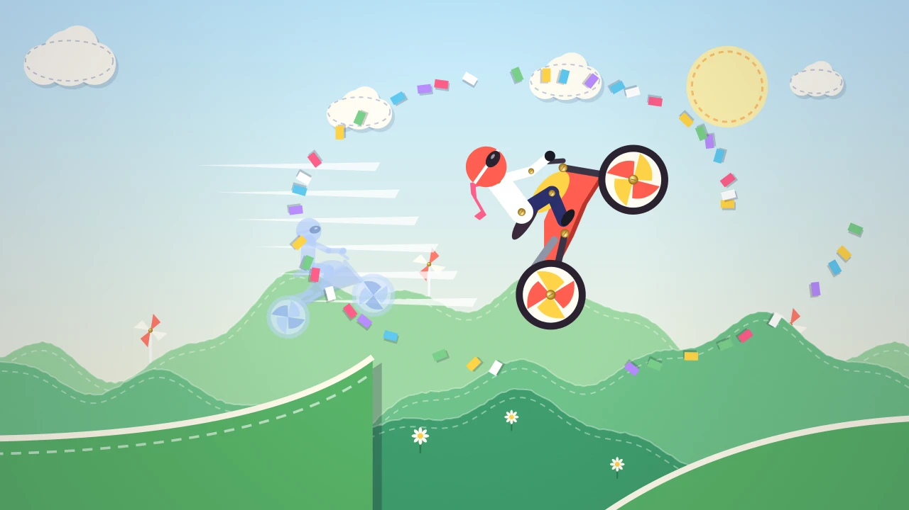

Snipwheel
Race a pinwheel motorbike through a cut-paper world: flip, wheelie and skim the scissors for combos, beat par for stars and race your friends' ghosts.
Snipwheel is a one-thumb stunt-bike racer set in a handmade papercraft world. Every hill is cut from cardstock, every seam is stitched, and your rider is a little paper puppet held together with brass split pins. Hold anywhere to ride. Hold on the left to lean back and on the right to lean forward; let go to coast. That is all you need to fly.
Race 24 handcrafted tracks across six worlds: the rolling hills of Meadow Fold, the corrugated mesas of Cardboard Canyon, the folded ice of Origami Glacier, the stitched felt lanterns of Lantern Loom, the tinfoil moons of Foil Cosmos and the snapping blades of Scissor Works. Each track has three clear stars: finish it, beat the par time, and bank the stunt target in a single run. Tracks unlock one after another, and every goal is shown before you ride.
Stunts build a combo. Backflips, frontflips, double and triple flips, long wheelies, stoppies, big air and close shaves under hanging lanterns and snippers all add points and raise the multiplier up to x8. Land clean to bank it and earn a flip boost; crash and the combo is lost. Big flips slow time for a heartbeat, speed lines stream past at full throttle, and a crash sends your puppet tumbling apart at the pins. Tap to respawn at the last checkpoint instantly, or restart the run in one tap.
You always race a ghost: your own best run, or the Pace bot until you have one. A new daily track arrives every day, the same for every rider, with a streak that unlocks the Daily Dasher bike. After each run you see where you stand and the next rank to beat. Until online leaderboards launch, ranks are an offline preview against a generated field of sample riders, and the game says so clearly.
Share a run as a picture card, or send a beat-my-time link: it carries your exact run, so your friend races your ghost on the same track and the time is checked by replaying it. Unlock seven bikes, six helmets and six scarf colours by playing: stars, flips, dailies and streaks. They are all cosmetic and every bike handles the same. One optional ad lets you try a locked bike for three runs; nothing is for sale.
Progress saves automatically on your device. Snipwheel plays in portrait or landscape on phones, tablets and desktop, with touch, mouse or keyboard.